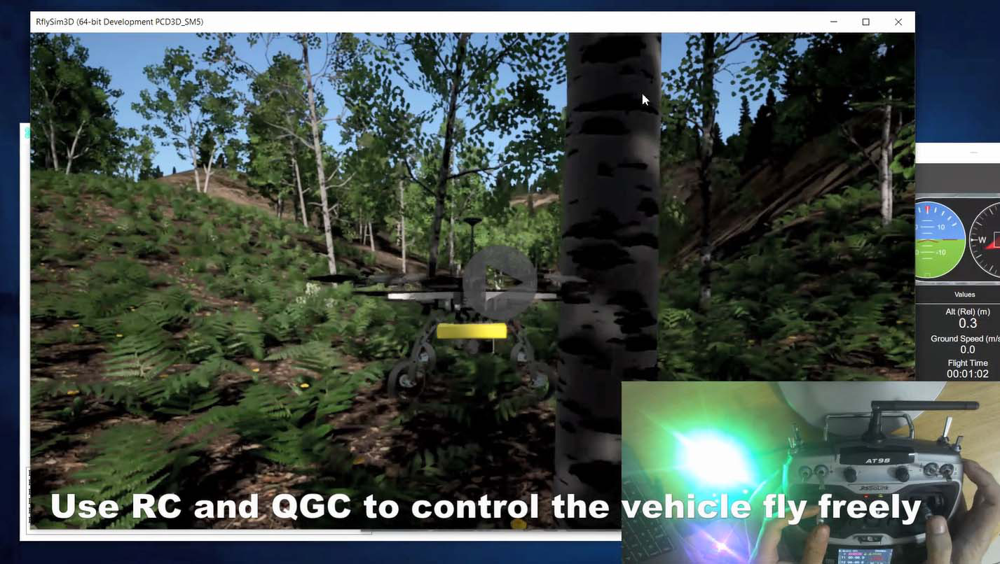
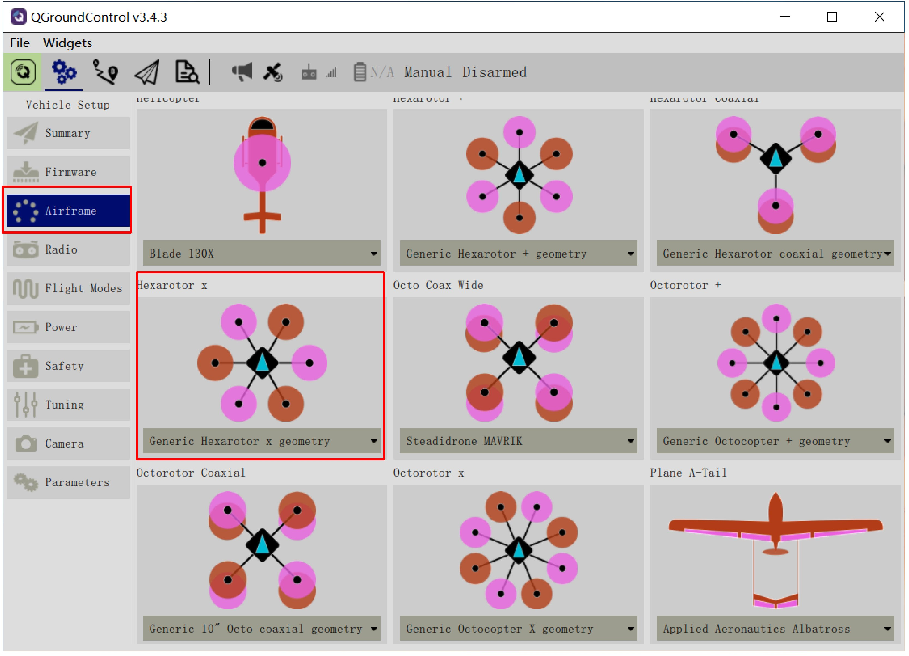
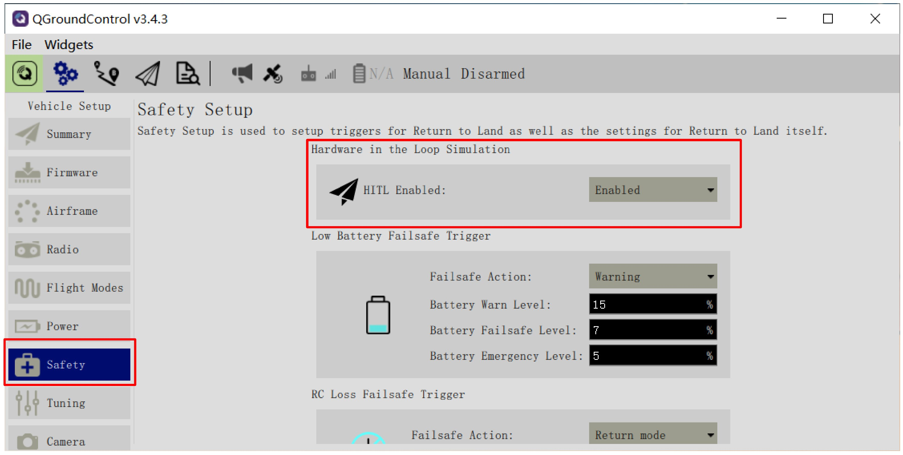
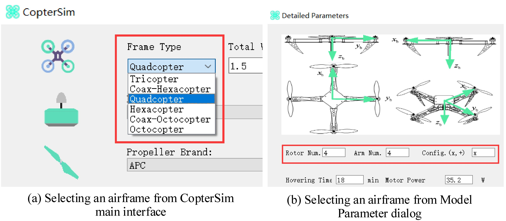
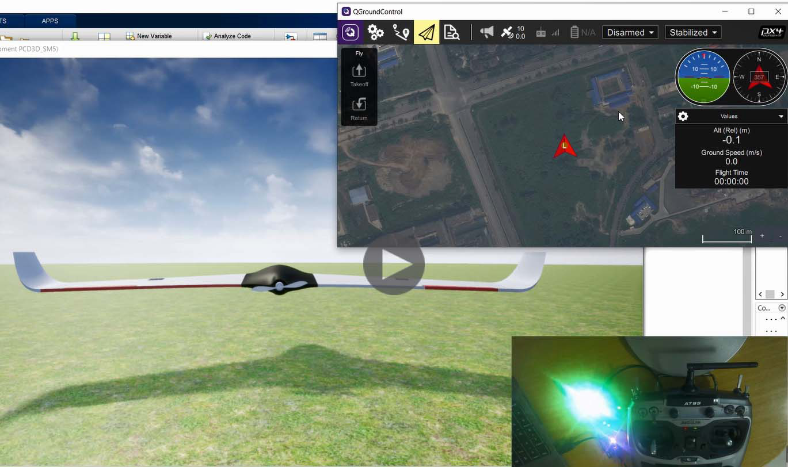
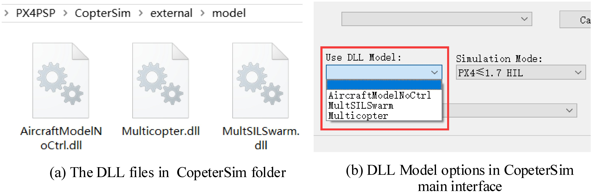
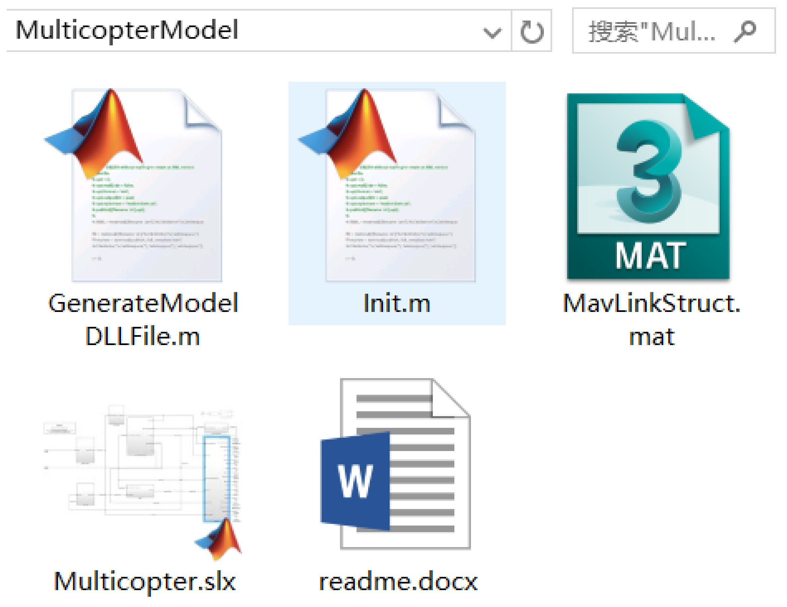
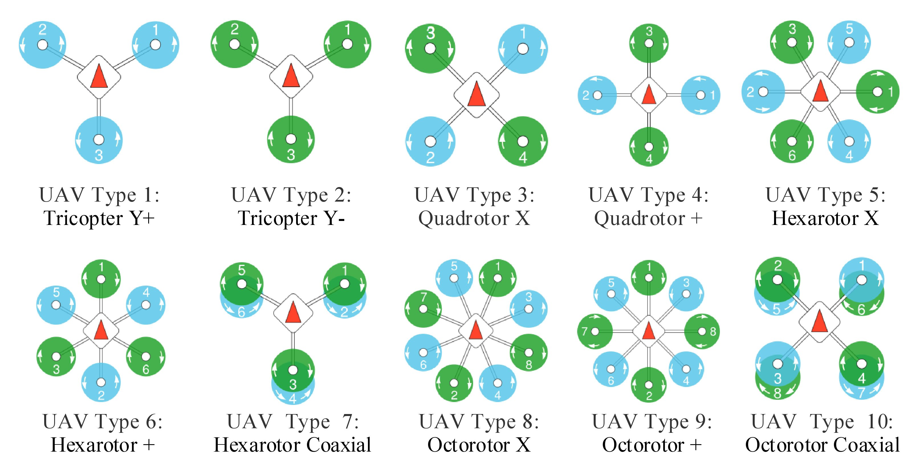

3. Other Types of Vehicles¶
3.1. Other Multicopter Types, e.g. Hexacopter¶
RflySim also supports to simulate other types of multicopters. You only need to select a desired multicopter configuration in CopterSim, and set Pixhawk to specific multicopter control mode through QGC.
In the following video, we present the procedure to use RflySim to simulate a Hexacopter.
RflySim Advance Function: How to simulate other types of multicopters
More detailed setting methods for other types of multicopters are presented below.
3.2. HIL Simulation for Other Types of Multicopters¶
In the previous courses, readers need to set up the Pixhawk autopilot through QGC to enter the “HIL Quadcopter X” airframe mode. This mode only supports the quadcopter X configuration, which has strong limitations in practical usage. In addition to quadcopters, CopterSim can be used to all multicopter types supported by the PX4 autopilot software. The specific steps are presented as follows.
(1). Select a multicopter airframe in QGC
1). Correctly connect the Pixhawk autopilot with the QGC.
2). Select a required multicopter airframe in the “Airframe” tab (see Fig.4.8), such as hexacopters, octocopters, coaxial multicopters, etc.
3). Select a corresponding airframe size from the drop-down list of the airframe (e.g., F450, and 3DR DIY Quad).
4). Confirm that the Pixhawk is in the selected airframe mode applying the airframe and restarting.
Through the above steps, readers can set an airframe type that can be used for the actual flight with controller parameters matching the airframe size.
Fig. 4.8 Choosing a required multicopter airframe in QGC
(2). Set the HIL simulation mode in QGC As shown in Fig.4.9, after the QGC is properly connected to the Pixhawk autopilot, in the “Safety” tab of QGC, set the “HITL Enabled” option to “Enabled” and then re-plug the Pixhawk autopilot. After the above steps, any airframe can be set to enter the HIL simulation mode.
Fig. 4.9 Setting “HITL Enabled” option to “Enabled”
(3). Configure multicopter model in CopterSim There are two methods to set the multicopter airframe type in CopterSim. The first method is to select from the “Frame Type” drop-down menu (see Fig.4.10a) on the CopterSim UI; the other method is to open the “Model Parameters” dialog to set the number of arms, the number of rotors, and the head orientation.
Fig. 4.10 Setting multicopter airframe in CopterSim
(4). Start HIL simulation Taking a hexacopter as an example, set the Pixhawk airframe type to a general hexacopter in QGC (see Fig.4.8); enable the HIL mode in QGC (see Fig.4.9); then, configure hexacopter parameters in CopterSim, as shown in Fig.4.10b. Next, insert the Pixhawk autopilot into the computer, select the Pixhawk serial port in CopterSim, and click “Start Simulation” button to start the HIL simulation for the hexacopter.
3.3. Other Vehicle Types, e.g., Fixed-Wing Aircraft¶
RflySim also supports to convert any vehicle model in Simulink to a DLL model file, and imports it to CopterSim to perform HIL simulation. In the following video, we present the procedure to convert the Simulink model of a fixed-wing aircraft to Coptersim for hardware-in-the-loop simulation.
RflySim Advance Function: How to simulate other types of multicopters
More detailed setting methods for other types of vehicles are presented below.
3.4. HIL Simulations of Other Models¶
As shown in Fig.4.8, a Pixhawk autopilot supports not only multicopters, but also fixed-wing aircraft, vertical take-off and landing aircraft, rovers, boats, and other types of vehicle. To support all vehicle types supported by Pixhawk autopilots, CopterSim also provides an interface to import the Simulink model as DLL model files to perform HIL simulations.
(1). Use DLL model files in CopterSim As shown in Fig.4.11a, copy the DLL model file generated by Simulink to the folder “CopterSimexternalmodel”. After re-opening the CopterSim, readers can see all available DLL model files in the “Use DLL Model” drop-down list in Fig.4.11b. These DLL model files can be used to simulate any aircraft or vehicles. Select a DLL model, configure the Pixhawk autopilot to the desired airframe in QGC, and finally start HIL simulation in CopterSim.
Fig. 4.11 Select DLL model for simulation
(2). Method to generate DLL model file in Simulink As shown in Fig.4.12, open the Simulink source code folder “MulticopterModel” (obtained with the serial number), and open the desired “.slx” Simulink file (multicopter, aircraft, etc.) in it. Then, modify the model parameters or replace some of the modules in Simulink to meet the simulation model requirements. Next, click the “compile” button in Simulink to generate C/C++ code. Finally, run the “GenarateModelDLLFile” command in MATLAB to generate the DLL model file in “.dll” format and copy it to the folder shown in Fig.4.11.
Fig. 4.12 Simulink source code to generate DLL model file
Since Simulink uses modular programming methods, in the provided “.slx” file, it is easy to obtain different vehicle configurations by changing parameters or some modules. For example, the multicopter types presented in Fig.4.12 can be easily applied by modifying the airframe type parameter ModelParam_uavType in the “Init.m” initialization script (see Fig.4.13) to a corresponding value. The default multicopter configuration of the previous experiment was uavType = 3, which is the conventional X-shaped quadcopter. [1]
Fig. 4.13 Model corresponding to uavType parameter in Simulink model
Notes
| [1] | These configurations correspond to the multicopter models supported by the PX4 autopilot. Readers can refer to the official website: http://dev.px4.io/master/en/airframes/airframe_reference.html. |